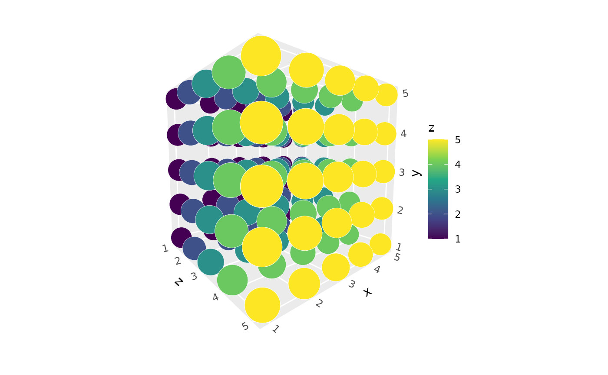
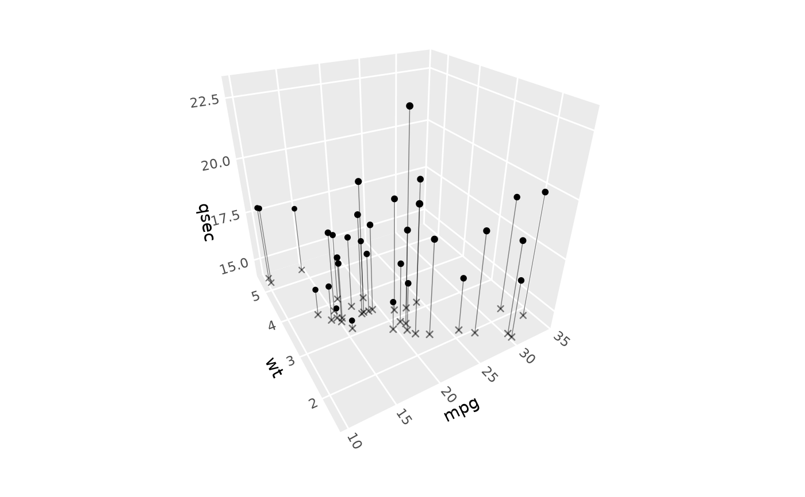
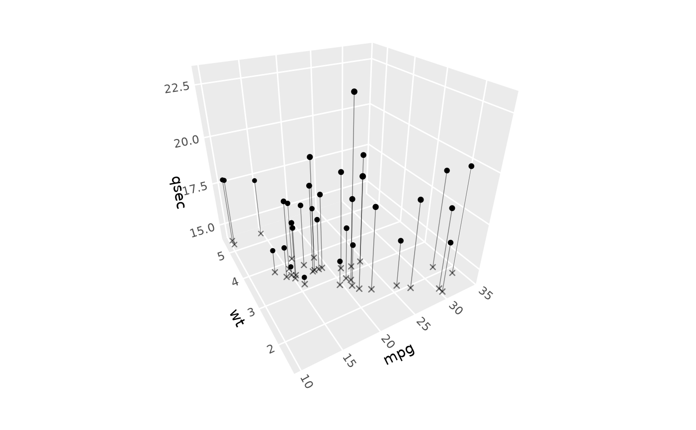
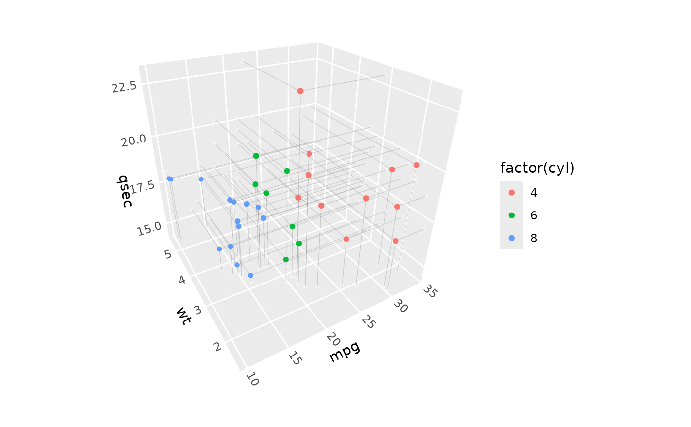
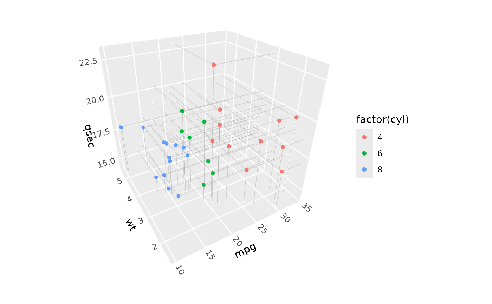

geom_point_3d() creates scatter plots in 3D space with automatic depth-based
size scaling. Points closer to the viewer appear larger, while points farther
away appear smaller, creating realistic perspective effects. Optionally adds
reference lines and points projecting to cube faces, to illustrate point locations
in 2D.
Usage
geom_point_3d(
mapping = NULL,
data = NULL,
stat = StatPoint3D,
position = "identity",
...,
na.rm = FALSE,
show.legend = NA,
inherit.aes = TRUE,
scale_depth = TRUE,
raw_points = TRUE,
ref_lines = FALSE,
ref_points = FALSE,
ref_faces = "zmin",
ref_circle_radius = 1.5,
ref_circle_vertices = 16,
ref_line_color = NULL,
ref_line_colour = NULL,
ref_line_linewidth = 0.25,
ref_line_linetype = NULL,
ref_line_alpha = NULL,
ref_point_color = NULL,
ref_point_colour = NULL,
ref_point_fill = NULL,
ref_point_size = NULL,
ref_point_alpha = NULL,
ref_point_stroke = NULL,
ref_point_shape = NULL
)
stat_point_3d(
mapping = NULL,
data = NULL,
geom = "point_3d",
position = "identity",
na.rm = FALSE,
show.legend = NA,
inherit.aes = TRUE,
raw_points = TRUE,
ref_lines = FALSE,
ref_points = "circles",
ref_faces = "zmin",
ref_circle_radius = 0.02,
ref_circle_vertices = 16,
...
)Arguments
- mapping
Set of aesthetic mappings created by
aes(). In addition to the standard point aesthetics,geom_point_3d()requires x, y, and z coordinates.- data
The data to be displayed in this layer.
- stat
The statistical transformation to use on the data. Defaults to StatPoint3D for proper discrete scale handling and reference line support.
- position
Position adjustment, defaults to "identity".
- ...
Other arguments passed on to
layer().- na.rm
If
FALSE, missing values are removed with a warning.- show.legend
Logical indicating whether this layer should be included in legends.
- inherit.aes
If
FALSE, overrides the default aesthetics.- scale_depth
Logical indicating whether to apply depth-based scaling to point sizes, point stroke widths, and reference line widths. When
TRUE(default), points/lines closer to the viewer appear larger/wider, and points farther away appear smaller. WhenFALSE, all points/lines have uniform size/width.- raw_points
Logical indicating whether to show the original 3D points. Default is
TRUE.- ref_lines
Logical indicating whether to show reference lines projecting from points to cube faces. Default is
FALSE.- ref_points
Type of reference points to create. Options:
FALSE: No reference points (default)TRUE or "circles": Circular reference points that project properly"points": Single-point references (renders faster and supports non-circular shapes, but point shape is not 3D-transformed)
- ref_faces
Character vector specifying which cube faces to project to. Valid face names are: "xmin", "xmax", "ymin", "ymax", "zmin", "zmax". Default is "zmin" (bottom face). Multiple faces can be specified.
- ref_circle_radius
Radius for circular reference points as percentage of standardized coordinate space.
- ref_circle_vertices
Number of vertices for circular reference points (higher = smoother).
- ref_line_color, ref_line_colour, ref_line_linewidth, ref_line_linetype, ref_line_alpha
Styling overrides for reference lines. When NULL, inherits from point aesthetics or uses defaults. Both American (
ref_line_color) and British (ref_line_colour) spellings are accepted.- ref_point_color, ref_point_colour, ref_point_fill, ref_point_size, ref_point_alpha, ref_point_stroke, ref_point_shape
Styling overrides for reference points and circles. When NULL, inherits from raw point aesthetics with shape-aware logic (complex shapes 21-25 vs simple shapes 0-20/characters). Both American (
ref_point_color) and British (ref_point_colour) spellings are accepted.
Details
StatPoint3D performs identity transformation (passes data through unchanged) while properly handling discrete scales for 3D coordinate systems. It can optionally generate reference lines and points projecting to cube faces.
Aesthetics
geom_point_3d() supports all the same aesthetics as geom_point(), plus z:
x: X coordinate (required)
y: Y coordinate (required)
z: Z coordinate (required)
alpha: Transparencycolour: Point border colorfill: Point fill color (for certain shapes)shape: Point shapesize: Point size (gets depth-scaled whenscale_depth = TRUE)stroke: Border width for shapes with borders
StatPoint3D returns the following computed variables
x_raw,y_raw,z_raw: Original values before discrete-to-numeric conversionelement_type: Type of element ("raw_point", "ref_point", "ref_line", "ref_circle")segment_id: ID linking the two endpoints of reference linesref_face: Which face reference elements project toref_circle_radius: Radius for circular reference pointsref_circle_vertices: Number of vertices for circular reference points
Depth Scaling
The depth scaling uses an inverse relationship with distance, following the
mathematical relationship: apparent_size = base_size * reference_distance / actual_distance
This creates realistic perspective where:
Objects twice as far appear half as big
Objects twice as close appear twice as big
The center of the plot volume renders at exactly the user-specified size
Point Rendering
ggcube uses shape-aware rendering for improved stroke behavior:
Simple shapes (0-20, characters): Use
sizefor fontsize,strokefor border width, no fillComplex shapes (21-25): Use ggplot2's approach:
size + 0.5*strokefor fontsize to prevent gapsBoth size and stroke are depth-scaled when
scale_depth = TRUEAll shapes preserve stroke depth scaling and parameter control
Reference Features
Reference lines and points help visualize the 3D relationships by projecting data points onto cube faces:
Reference lines: Connect each 3D point to its projection on specified faces
Reference points: Show the projected location on the faces
Reference circles: Circular projections that appear as realistic 3D shadows
Depth sorting: All elements (original points, reference lines, reference points) are automatically depth-sorted for proper 3D rendering
Aesthetic Inheritance
Reference elements intelligently inherit styling from raw points:
Shape-aware: Complex shapes (21-25) with fill/colour are handled differently from simple shapes (0-20/characters)
Alpha detection: If all points have alpha=1, uses 0.5 default for ref elements; otherwise inherits mapped alpha
Priority: Explicit ref_* parameters > mapped aesthetics > smart defaults
See also
geom_point() for 2D scatter plots, coord_3d() for 3D coordinate systems,
stat_point_3d() for the underlying statistical transformation.
Examples
library(ggplot2)
# Basic 3D scatter plot with depth scaling
ggplot(expand.grid(x = 1:5, y = 1:5, z = 1:5),
aes(x, y, z, fill = z)) +
geom_point_3d(size = 10, shape = 21, color = "white", stroke = .1) +
coord_3d(pitch = 40, roll = 5, yaw = 0, dist = 1.5) +
scale_fill_viridis_c()

# Add circular reference points on 2D face panel
ggplot(mtcars, aes(mpg, wt, qsec)) +
geom_point_3d(size = 3,
ref_points = TRUE, ref_lines = TRUE, ref_faces = "zmin") +
coord_3d()
 # Aesthetic inheritance - ref elements inherit color and fill
ggplot(mpg, aes(displ, hwy, cty, color = cty, fill = cty)) +
geom_point_3d(shape = 21, size = 3,
ref_points = TRUE, ref_lines = TRUE,
ref_faces = "zmin") +
coord_3d()
# Use point-style references with custom shape
ggplot(mtcars, aes(mpg, wt, qsec)) +
geom_point_3d(ref_points = "points", ref_lines = TRUE,
ref_point_shape = 4, ref_point_size = 2,
ref_line_alpha = 0.5) +
coord_3d()

# Show only circular reference projections (no original points)
ggplot(mtcars, aes(mpg, wt, qsec)) +
geom_point_3d(raw_points = FALSE, ref_points = "circles", ref_lines = TRUE,
ref_faces = c("zmin", "ymin")) +
coord_3d()
# Aesthetic inheritance - ref elements inherit color and fill
ggplot(mpg, aes(displ, hwy, cty, color = cty, fill = cty)) +
geom_point_3d(shape = 21, size = 3,
ref_points = TRUE, ref_lines = TRUE,
ref_faces = "zmin") +
coord_3d()
# Use point-style references with custom shape
ggplot(mtcars, aes(mpg, wt, qsec)) +
geom_point_3d(ref_points = "points", ref_lines = TRUE,
ref_point_shape = 4, ref_point_size = 2,
ref_line_alpha = 0.5) +
coord_3d()

# Show only circular reference projections (no original points)
ggplot(mtcars, aes(mpg, wt, qsec)) +
geom_point_3d(raw_points = FALSE, ref_points = "circles", ref_lines = TRUE,
ref_faces = c("zmin", "ymin")) +
coord_3d()
 # Project to multiple faces with custom circle styling
ggplot(mtcars, aes(mpg, wt, qsec, color = factor(cyl))) +
geom_point_3d(ref_points = "circles", ref_lines = TRUE,
ref_faces = c("zmin", "ymin", "xmax"),
ref_line_color = "grey50", ref_line_alpha = 0.3,
ref_point_fill = "white", ref_point_stroke = 0.8,
ref_circle_radius = 1) +
coord_3d()

# Disable depth scaling for uniform sizes
ggplot(mtcars, aes(mpg, wt, qsec)) +
geom_point_3d(scale_depth = FALSE, size = 3) +
coord_3d()
# Project to multiple faces with custom circle styling
ggplot(mtcars, aes(mpg, wt, qsec, color = factor(cyl))) +
geom_point_3d(ref_points = "circles", ref_lines = TRUE,
ref_faces = c("zmin", "ymin", "xmax"),
ref_line_color = "grey50", ref_line_alpha = 0.3,
ref_point_fill = "white", ref_point_stroke = 0.8,
ref_circle_radius = 1) +
coord_3d()

# Disable depth scaling for uniform sizes
ggplot(mtcars, aes(mpg, wt, qsec)) +
geom_point_3d(scale_depth = FALSE, size = 3) +
coord_3d()